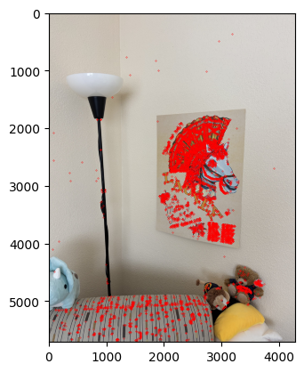

Three of these image pairs were taken in SF on a cloudy day with my digicam. The last was taken of a corner of
my room on my phone (hi Laufey!!).

original

selected points

nearest neighbor

bilinear

original

selected points

nearest neighbor

bilinear
It takes about 20-25% more time to do bilinear interpolation vs nearest neighbor interpolation (2.22 vs 2.86
seconds for the window and 2.69 vs 3.00 seconds for the floor). This might be because we need to consider
four points instead of one and thus more computations to weight each point.
In terms of quality, the bilinear interpolation takes the cake. The lines around the window are so much less
grainy than nearest neighbor interpolation because it takes into account many pixels, instead of a lumpy
look where edges that are black get somewhat warped. Some of the lines in the floor also have a jagged look
for nearest neighbor interpolation, particularly with the dark brown in the upper right-hand corner.
Part A4: Blend the Images into a Mosaic
First, to make sure that my image overlapping was working well, I implemented a naive algorithm that just
weights images by 0.5 in the overlap region and 1 elsewhere. You can see that the edges of the images are
very clear, so this was a sign to try something fancier.
- I calculate the dimensions of the output image
- I pad both images with 0s to match the dimensions of the output image.
- I use scipy.ndimage.distance_transform_edt to create a distance map for each image
- Utilizing my code from project 2, I create Gaussian and Laplacian pyramids of two levels and create
the final image with weighted averaging determined by the distance_transform_edt function.
You can still see a little bit of the seam.

It’s almost impossible to see the seam for this indoor image!

You can see the seam if you look close enough.

This other outdoor image taken from the roof of an apartment building does quite
well.
Part B1: Harris Corner Detection
I used the harris.py provided as part of the project to detect Harris corners. I tried implementing ANMS after
that, but my kernel kept crashing. Turns out calculating pairwise distance between 195k points crashes your
kernel!
After doing some light filtering on the Harris points, I calculated ANMS (Adaptive Non-Maximal Suppression) as
follows, with c_robust = 0.9 and num_corners = 500.
- Obtained the Harris score at each corner
- Constructed an array of distances for all pairs of corners
- Created a mask to figure out if f(x_i) < c_robust * f(x_j). This is the specific line of code I used
mask=scores[:, np.newaxis] < (c * scores[np.newaxis, :])
- I set 0 values to infinity, because we sort by min values later
- Find the minimum distance for each point
- Sort indices by min distance, then reverse the array to get the largest radius. I then selected the top
500 points after sorting by radius.
Funny thing is I also heavily relied upon the Laufey poster to find correspondences.

Harris corners (with prefiltering)
Part B2: Feature Descriptor Extraction
To extract features, I pass in the points associated with good Harris corners, as found earlier. For each one of
these points, I extract the 40x40 pixel patch around it, if the full 40x40 pixel patch falls within the image.
Then, I downsample the patch to 8x8 pixels and normalize (which allows us to compare patches between images). I
keep track of which points correspond to extractable features (ones that fall within the image bounds).